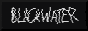
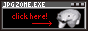

>> You have found ABYSSAL's seaport, a hub where other sailors may dock and mingle with one another. Take a gander at the fine ships (sites) that catch your eye.
>> DISCLAIMER: Buttons are added by my discretion, and I will only link sites that I feel are safe spaces. Buttons will be removed if I find that a site no longer fits the community that I strive to foster. Do not link me on your site if you hold bigoted, harmful views.
>> Friends I've roped into Neocities:

>> Net neighbors. Organized roughly by color.
| Link | Description |
|---|---|
|  | A collection of thoughts on dark, horror media. |
 |
A personal site with cool projects. |
|  | A personal site reminiscent of the old web. |
 |
A punk-rock personal site with a personal blog and projects. |
 |
Inspired by early dragon quest games, full of shrines, recipes, and writings. |
| A horror site with some cool writings. | |
 |
A circus with a lot of resources, also the webring owner of Shroom.ink. |
 |
A blue site with a blog, art gallery, and some fun graphics. |
| A compact personal site that likes sharks :3. | |
 |
A gothic dungeon with endless chambers to roam. |
 |
Inside a wooden igloo is a personal site containing interests and projects. |
 |
EYESTRAIN WARNING. A personal site with lots of original music and projects. |
| A personal site dedicated to decentralizing the web and moving away from capitalist algorithms. | |
| A fun, colorful personal site with some shrines, graphics, and fun widgets for visitors. | |
 |
A really neat digital garden sanctuary complete with a library, art, and a pretty rose color palette. |
 |
A personal site with tons of really good resources for small web/site building! |
| Lots of web graphics for your site. | |
| A two-in-one joint site with cool things like a comment widget (that I use) and pokemon! | |
 |
A cozy digital home with lots of web resources for artists, and links to Cinni's other projects like 99GIF SHOP and more. |
 |
A personal site with a terminal/OS theme with media logs and links to a variety of resources. |
| A super cool site with a minimal folder layout. Check out the media reviews. | |
 |
A silly corner with a hefty collection of web graphics. |
| This site is beautifulll, if you love space and dusk colors, this site is for you. Lots of cool projects. | |
 |
A really cozy personal site with so much to explore. Personal favorite pages are the music and photobook pages. |
 |
A really rad spooky site with lots of spooky web graphics, a library with links to books you can read online, and lots of realms (sub-pages) to explore. |
 |
A personal site that's very 8-bit and cozy, with lots to explore like a bookshelf, web goodies, etc. |
 |
Personal site with tons of resources and really neat guides for coding! I also like looking at the different rainbow patterns. |
| A really cool personal site with a lot of personality and old web graphics. Has a Snom shrine. | |
| A personal site with lots of hobbies showcased! Also reviving a couple pixel clubs, check them out. | |
 |
A deep blue personal site with a journal, photo gallery, and links to cool web things. |
| Travel through time and space to this cool personal site that's very stylized. | |
| A CRAZY cool interactive site,, so much to explore and if you find the tour? so cool. get lost in it. | |
| This personal site is 8-bit spaced themed and super cute! There are extensive music and webgarden pages that you should check out. | |
| A blog with some really thoughtful writings, give it a read! | |
 |
An adorable manatee themed site with a big stamp collection and pixel cliques! |
 |
A cool dual personal site run by an artist and poet. Play some of the games they've made, on their site! |
 |
A punk ode to the old web, with lots of pages dedicated to hobbies and interests. Lots of sick pixel art too. |
 |
Step into a cozy cottage and explore this personal site and all its rooms. |
 |
A really slick site with lots of code projects and things to check out. Fun things to click on scattered about too. |
 |
An OS themed site that really feels like you're navigating an old computer. |
 |
A spooky scary- site with plenty of skeletons. A little bit of personal site mixed with all things creepy and Halloween! |
| Discover numetal sounds at this news site dedicated to the scene. | |
 |
A site dedicated to webmastery, full of resources and tools for you to build your own! |
 |
A community of Web Revival enthusiasts putting together webmastering resources and providing tools and help for those who are making sites! |
 |
A really cozy cabin in the woods site with original art, worlds, and characters to peruse. |
 |
An ethereal site that's reminiscent of vintage perfume bottles and silver lockets. Read through the scrapbook-like journal or the literature linked there. |
|
A cozy cottage for you to rest in and perhaps read some poetry, or learn a new recipe! |
 |
A |
 |
A system's personal site full of art, interests, and other fun things to explore. |
 |
Step into Melonland, a magical place where many web enthusiasts hang out. You'll find lots to do there. |
 |
A cute, comfy site with pretty graphics! It is under construction as of 3/7/24. |
| An amalgamation of hobbies, ramblings, and other personal things. | |
| A personal site for expressing creativity, with a beachy theme that feels like vacation. | |
 |
A museum dedicated to all things web building and memorializing digital belongings. |
| You enter an empty theatre... what will you explore? | |
| A really cool site with links to webdev resources and some github repos that you can check out. I enjoy opening the console. | |
 |
Spirit Cellar's art gallery of many mediums! Stained glass, paper, metal, and wood to name a few. |
 |
An artistic site with cool projects and art, with an interactive feel. |
 |
A personal site that feels like the backrooms. Explore some shrines and links. |
 |
An artist's site that is very red. Really cool body horror work in there. Be warned of blood. |
| A really cute site that's laid out like a scrapbook or picnic spread! | |
 |
A lush smoking lounge that's quite relaxing to be in. This personal site feels luxurious like a scandalous victorian lounge. Care for a smoke? |
| A personal site with writings and links to hobbies such as crochet videos! | |
 |
A dark room with a single light and computer. Click around to find out. |
 |
A very well-made site with lots of bookmarks, experiments, and a focus on accessability! |
 |
EYESTRAIN WARNING. A colorful punk site with music and shrines to browse. I'm obsessed with their art. |
 |
A site that has a lot of stuff dedicated to various media. I visit their horror page often. |
| A nereid's creation... of many games! Check them out. I like the old web graphics found on this site. | |
| A lovely site like a castle in the clouds. This personal site has art and projects you can take a look at, including lots of f2u stickers and such. | |
 |
A beautiful site inspired by The Haunting of Hill House. This site looks like an artful vintage scrapbook and I'm in awe of its aesthetic and contents. |
| A colorful personal site with lots of collections of things from art to quiz results. | |
 |
A cute site with some comics to read and art to view! |
 |
A personal site with ramblings of music, art, and other interests. Go feed her gifypet! |
 |
Created with the goal of decentralizing the internet, this personal site has much to explore, including projects and web graphic collections. |
| A personal site containing art, including oc's in a really cute style, links, and shrines. | |
 |
As the name might suggest, this site has TONS of artwork. Pixels, traditional, and so much more. |
| A colorful site that displays paintings and pixel art! | |
| I'm obsessed with the picture of pikachu in... a pool?when you first enter the site. It reminds me of Nirvana's Nevermind album cover. A colorful, playful site that seems to have no end to things to discover! | |
| Blazing Cobalt | Get teleported to another realm, and explore the collections of writings, media, and more at this site. |
| Howl | A bright, sparkly site with a bulletin board that feels like a real board full of updates and notes! I look forward to what they add to this site. |
| Dibs | A site that reminds me of the 80's on the West Coast (usa) and arcades. A sticker-bombed front page and a rad atmosphere. |
| wichitalk | A liminal space with cool cats and a Wall to explore and read. I like making the kitty in the header flip back and forth, it's neat. |
| burntangel | Descend into hell... or somewhere. Gothic personal site with sooo many pages, and hidden ones, to explore. Get into it. |
| multohhh | FLASH WARNING. You enter an eerie graveyard. Someone awaits you. Click through this interactive site with cyber goth vibes. |
| mapleverse | A series of short stories with original characters! |
| psionic blades | A very cyberpunk-inspired site. |
| Seaglass | Beautiful dreamy art, like stained glass. |
| Momo Marie | A romantic goth personal site with some shrines and playlists to visit. |
| Rage Inducer | A site that feels like a home, read up on a blog or check out the pixels there. |
I'm attempting to figure out js to make the table rows load in random order, so the same sites aren't displayed at the top/bottom every time someone visits.